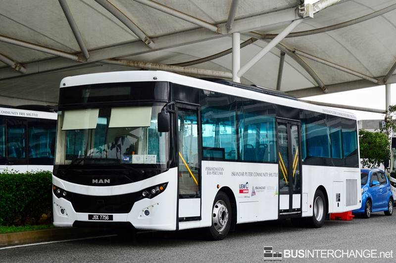

Overall Easy Diagram at a glance. (Click to enlarge)
Iskandar Puteri Community Shuttle bus services are provided by UEM Sunrise. These bus services enhance public transport connectivity in Iskandar Puteri in addition to existing Causeway Link buses serving the area.
All of these shuttle bus services serve key amenities in Iskandar Puteri, such as offices at Medini 6 / 7 / 9, Gleneagles Hospital, Mall of Medini, Legoland, Educity, residences at East Ledang and Puteri Harbour Ferry Terminal.
The expansion of this initiative was rolled out in April 2017, with an additional 11 new bus routes in Johor Bahru and a total of 20 new bus routes in Johor towns such as Muar, Tangkak, Yong Peng, Segamat, Simpang Renggam, Kluang, Batu Pahat, Pontian, Mersing and Kota Tinggi.
These shuttle buses are provided free of charge. Passengers are advised to present resident card, staff card, student card, ferry ticket or event flyer upon boarding.
One shuttle bus route IP01 was introduced on 1 September 2018, serving between Puteri Harbour Ferry Terminal and Larkin. IP01 replaces the free shuttle bus service IP that was operated by Causeway Link.
Two more routes, IP02 and IP03 were introduced in early 2019, providing direct connection to AEON Bukit Indah and Rumah Iskandar Malaysia.
Please note that IP03 operates on Weekdays only.
Below is Table for Iskandar Puteri Community Routes

| Route No | Route | Bus Service |
|---|---|---|
| IP01 | Puteri Harbour Ferry Terminal ⇔ Larkin | UEM Sunrise |
| IP02 | PPR Sri Stulang ⇔ Majlis Bandaraya Johor Bahru | UEM Sunrise |
| IP03 | Larkin ⇔ PPR Sri Stulang | UEM Sunrise |